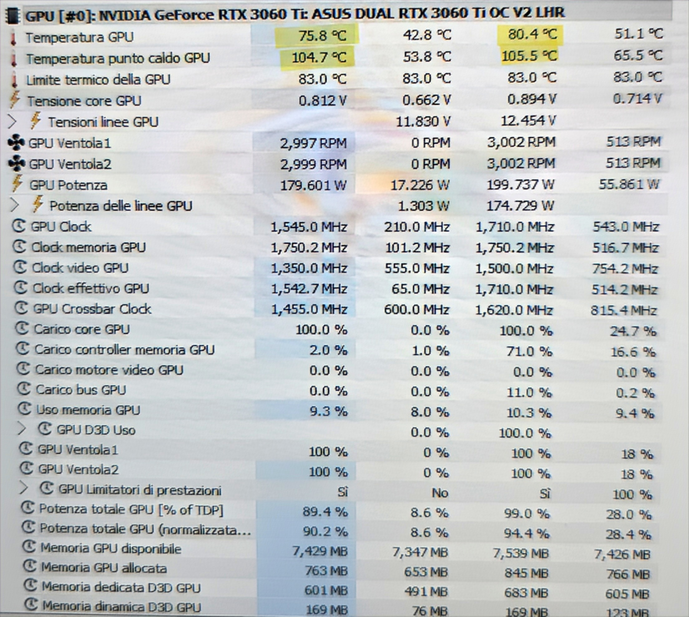

Cos'è la pasta termica?
La pasta termica è un composto che viene applicato tra il processore (CPU o GPU) e il dissipatore di calore per migliorare la conduzione del calore. La sua funzione principale è quella di ridurre la temperatura dei componenti, evitando che si surriscaldino eccessivamente.
Con il tempo, la pasta termica tende a seccarsi e solidificarsi, perdendo la sua efficacia e causando un aumento delle temperature, che può influire negativamente sulle prestazioni del dispositivo.
Perché sostituirla?
Se noti che il tuo PC o laptop si surriscalda frequentemente o le prestazioni calano in modo evidente, la causa potrebbe essere la pasta termica secca. Sostituirla aiuta a ripristinare una corretta dissipazione del calore e a migliorare le performance termiche del dispositivo. La sostituzione della pasta termica può portare a una riduzione significativa delle temperature di esercizio, migliorando la longevità dei componenti.
Attenzione!
La sostituzione della pasta termica richiede l'apertura completa del componente, il che potrebbe invalidare la garanzia, soprattutto se l'intervento riguarda parti del dispositivo su cui non dovresti mettere mano. Ti consiglio di considerare questa operazione solo se sei consapevole dei rischi o, se preferisci, puoi affidarti a una persona capace di farlo come me per l'intervento.
Risultati della sostituzione della pasta termica
Di seguito puoi vedere la differenza nelle temperature dopo che ho sostituito la pasta termica su una scheda video RTX 3060 Ti.
Ho sostituito la pasta termica sul chip, cambiato i pad termici delle memorie e fatto una pulizia profonda da polvere su tutta la scheda.
Prima della sostituzione
Temperatura prima della sostituzione della pasta termica.
Dopo la sostituzione

Temperatura dopo la sostituzione della pasta termica e la pulizia.
Contattami per assistenza
Se pensi che il tuo dispositivo abbia bisogno di un intervento di sostituzione della pasta termica, contattami per maggiori informazioni


Telegram